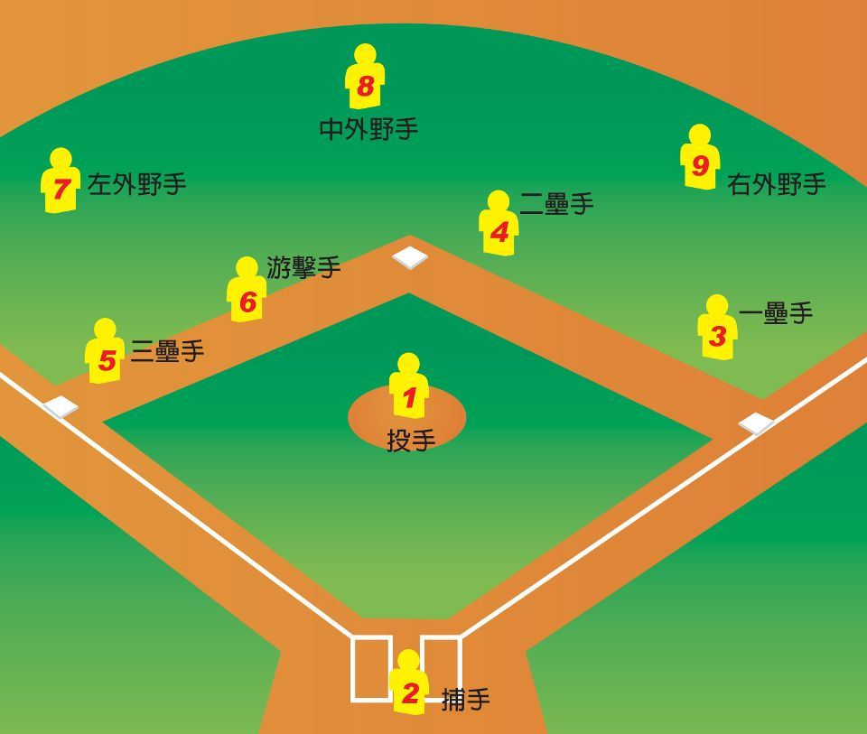

wei's website
Chen Kuo-Wei
study in CCU
1.In my childhood
I born in Nantou County. I have one elder sister, one younger brother, parents and grandparents in my family. l grow in this happiness family. When I was a child, I always played with many things in Nature. I liked to catch many type of bugs and fed them. My interest is baseball. When I was nine years old, I watched a baseball game in TV. Because for this fantastic game, I fell in love with baseball. I always watch the game in my free time.
2.In my high school life
I studied in National Dali Senior High School (NDSH), which located in Taichung and now renamed to The Affiliated Senior High School of National Chung Hsing University (SHCH). I left home and lived in the school dormitory because the school is far from my home. At first, I didn't adapt myself to new condition. I remember that I didn't sleep well at that time. Fortunately, I met some roommates to help me adapt myself to new life. Finally, I had a good high school life, and I met many good friends in my high school life.
Baseball
Baseball, which is a charming sport, is my interest. I fell in love with baseball when I first saw the baseball game in TV. Baseball is a sport played between two teams usually of nine players each. It is a bat-and-ball game in which a pitcher throws (pitches) a hard, fist-sized, leather-covered ball toward a batter on the opposing team. The batter attempts to hit the baseball with a tapered cylindrical bat, made of wood (as required in professional baseball) or a variety of other materials (as allowed in many nonprofessional games). A team scores runs only when batting, by advancing its players—primarily via hits—counterclockwise past a series of four markers called bases arranged at the corners of a ninety-foot square, or "diamond." The game, played without time restriction, is structured around nine segments called innings. In each inning, both teams are given the opportunity to bat and score runs; a team's half-inning ends when three outs are recorded against that team.
On the baseball field , there are nine positions for defense.
No.1 is pitcher, it is also written P.
No.2 is catcher, it is also written C.
No.3~No.6 are infielders, they are respectively First Base(1B), Second Base(2B),Third Base(3B), and Short Stop(SS).
No.7~No.9 are outfielders, they are respectively Right Field(RF), Center Field(CF), and Left Field(LF).
My favorite team's logo
1.Let TOEIC score more than 800
English, which is an important language in everywhere, is an ability which I must approve. The way to see my achievement is to join the TOEIC exam, and I think I will get more than 800 to prove my English ability.
2.Get into good graduate institute
As a college student, I am senior now. Because for advancing my professional knowledge, I choose to study graduate institute. Now I prepare the exam for the qualify of graduate institute everyday. I hope I can get good result for the exam at last.